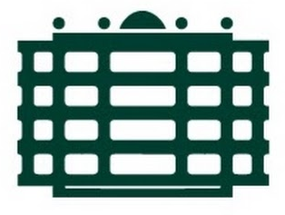
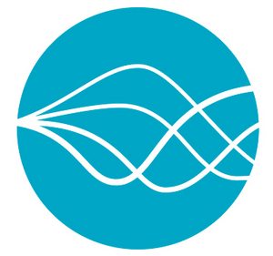
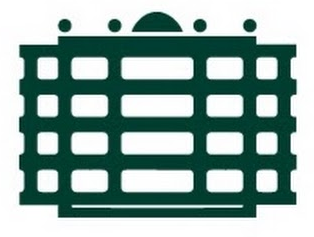
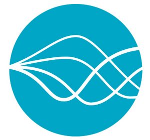

KONSENS: Konsistente Optimierung und Stabilisierung |
|  |  |
| [Researchers] [Project Description] [Publications] [Press] [Meetings] |
KONSENS: Konsistente Optimierung und Stabilisierung |
|  |  |
| [Researchers] [Project Description] [Publications] [Press] [Meetings] |
| Duration: | February 2018 - February 2021 |
| Project leaders: | Prof. Dr. Christoph Helmberg (Project Coordinator) |
| Algorithmic and Discrete Mathematics, Technical University of Chemnitz, Straße der Nationen 62, 09107 Chemnitz | |
| helmbergATmathematik.tu-chemnitz.de |
|
| Dr. Sara Grundel | |
| Simulation of Energy Systems, Max Planck Institute for Dynamics of Complex Technical Systems, Sandtorstr. 1, 39106 Magdeburg | |
| grundelATmpi-magdeburg.mpg.de |
|
| Prof. Dr.-Ing. Stefan Streif | |
| Automatic Control and System Dynamics Laboratory, Technical University of Chemnitz, Straße der Nationen 62, 09107 Chemnitz | |
| stefan.streifATetit.tu-chemnitz.de |
|
| Jun.-Prof. Dr. Karl Worthmann | |
| Ordinary Differential Equations, Technical University of Ilmenau, Weimarer Str. 25, 98693 Ilmenau | |
| karl.worthmann@tu-ilmenau.de |
|
| Researchers: | Tim Aschenbruck |
| Technical University of Chemnitz, tim.aschenbruckATetit.tu-chemnitz.de | |
|
Dr. Manuel Baumann |
|
| Max Planck Institute for Dynamics of Complex Technical Systems, baumannATmpi-magdeburg.mpg.de | |
|
Dr. Willem Esterhuizen |
|
| Technical University of Chemnitz, willem.esterhuizenATetit.tu-chemnitz.de | |
|
Dr. Bartosz Filipecki |
|
| Technical University of Chemnitz, bartosz.filipeckiATmathematik.tu-chemnitz.de | |
|
Felix Petzke |
|
| Technical University of Chemnitz, felix.petzkeATetit.tu-chemnitz.de | |
|
Philipp Sauerteig |
|
| Technical University of Ilmenau, philipp.sauerteigATtu-ilmenau.de | |
| Industry partners: | TenneT TSO GmbH · ENSO NETZ GmbH · Venios GmbH · Energy Saxony e. V. |
| Support: | Bundesministerium für Bildung und Forschung - "Mathematik für Innovationen" als Beitrag zur Energiewende |
| top |

| Description: |
 Die Energiewende geht einher mit einer zunehmenden Durchdringung der Netze mit volatilen Erzeugern (erneuerbare Energien), flexiblen Abnehmern (E-Mobilität) und teilweise neuartigen Energiespeichern (Batterien, Wärmespeicher). Diese führt - neben dem beschleunigten Handel an den Strombörsen - zu neuen Herausforderungen und Möglichkeiten im Betrieb der Stromnetze. In Kombination mit dem gleichzeitigen Ausbau der Netze durch neue Steuerungselemente unter dem Sammelbegriff Flexible AC Transmission Systems
(FACTS) sowie durch neue Leitungselemente wie der Hochspannungsgleichstromübertragung (HGÜ) bieten sich
Flexibilitäts- und Effizienzsteigerunspotentiale, die mit der traditionellen, halbautomatisierten Systemführung
der Netzbetreiber kaum nutzbar sind. Für eine vollautomatisierte Steuerung, die diese Potenziale heben kann,
benötigt es neue mathematische Verfahren und Konzepte, um die komplexen Wechselwirkungen vom Höchst-
spannungsnetz der TenneT TSO GmbH über das Verteilnetz der ENSO NETZ GmbH bis zum Microgrid zu
beherrschen. Letzteres gehört zum Mittel- und Niederspannungsbereich, dafür bietet die Venios GmbH Steuerungs-
und Simulationssoftware an. Das allgemeine Interesse an dieser Fragestellung belegt die Unterstützung des Energy
Saxony e.V. bei öffentlichkeitsarbeit und Verwertung der Ergebnisse.
Ziel ist es, mathematische (Optimierungs-) Verfahren zu entwickeln, um die Flexibilität innerhalb und zwischen
den einzelnen Netzebenen in der Lastflussoptimierung auszunutzen und Unsicherheiten zu kontrollieren. Dazu
bedarf es einer Fokussierung auf die wesentlichen Kernelemente (Modellreduktion), um mathematisch handhabbare
Modelle der multiskalen Systeme zu generieren. Dieser Ansatz erlaubt es bei gleicher Infrastruktur, den stabilen
Betrieb unter Hebung der Effizienzpotentiale aller beteiligten Netzwerksysteme zu realisieren. Die Energiewende geht einher mit einer zunehmenden Durchdringung der Netze mit volatilen Erzeugern (erneuerbare Energien), flexiblen Abnehmern (E-Mobilität) und teilweise neuartigen Energiespeichern (Batterien, Wärmespeicher). Diese führt - neben dem beschleunigten Handel an den Strombörsen - zu neuen Herausforderungen und Möglichkeiten im Betrieb der Stromnetze. In Kombination mit dem gleichzeitigen Ausbau der Netze durch neue Steuerungselemente unter dem Sammelbegriff Flexible AC Transmission Systems
(FACTS) sowie durch neue Leitungselemente wie der Hochspannungsgleichstromübertragung (HGÜ) bieten sich
Flexibilitäts- und Effizienzsteigerunspotentiale, die mit der traditionellen, halbautomatisierten Systemführung
der Netzbetreiber kaum nutzbar sind. Für eine vollautomatisierte Steuerung, die diese Potenziale heben kann,
benötigt es neue mathematische Verfahren und Konzepte, um die komplexen Wechselwirkungen vom Höchst-
spannungsnetz der TenneT TSO GmbH über das Verteilnetz der ENSO NETZ GmbH bis zum Microgrid zu
beherrschen. Letzteres gehört zum Mittel- und Niederspannungsbereich, dafür bietet die Venios GmbH Steuerungs-
und Simulationssoftware an. Das allgemeine Interesse an dieser Fragestellung belegt die Unterstützung des Energy
Saxony e.V. bei öffentlichkeitsarbeit und Verwertung der Ergebnisse.
Ziel ist es, mathematische (Optimierungs-) Verfahren zu entwickeln, um die Flexibilität innerhalb und zwischen
den einzelnen Netzebenen in der Lastflussoptimierung auszunutzen und Unsicherheiten zu kontrollieren. Dazu
bedarf es einer Fokussierung auf die wesentlichen Kernelemente (Modellreduktion), um mathematisch handhabbare
Modelle der multiskalen Systeme zu generieren. Dieser Ansatz erlaubt es bei gleicher Infrastruktur, den stabilen
Betrieb unter Hebung der Effizienzpotentiale aller beteiligten Netzwerksysteme zu realisieren.
|
| top |
| Publication: |
The goal of this project is to develop mathematical methods and algorithms for the optimization and stabilization of the electrical power grid with emphasis on new technological developments such as the rise of renewables, E-mobility, and others. All results are reported in scientific publications:
|
| top |
| Press Releases: |
|
| Project meetings |
The industrial and academic partners have regular project meetings with alternating hosts.
|
Page created and maintained by Manuel Baumann, last updated: June 2018 |